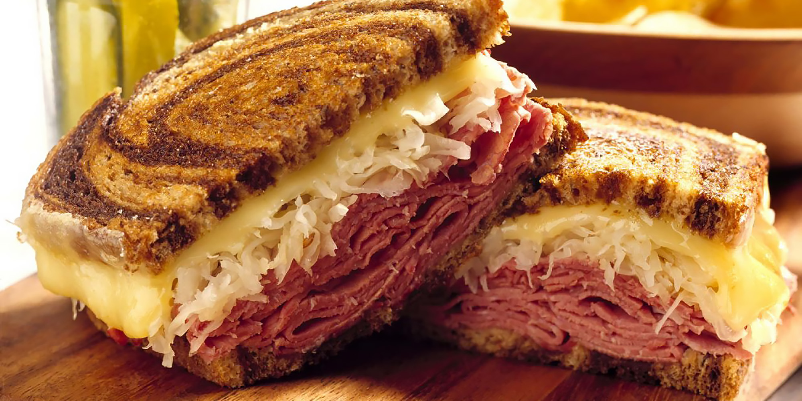

Reuben

Sandwich! It's pretty simple and pretty good, you only need like five ingredients to make it.
The sauerkraut and corned beef combine really well together.
Ingredients
- Rye bread
- Corned beef
- Sauerkraut
- Swiss cheese
- Thousand island dressing
Steps
- Get two slices of bread, and spread the dressing on both sides.
- Layer three or four slices of corned beef on one slice evenly.
- Add the sauerkraut on top of the beef, then put a few slices of swiss cheese on the other side of the bread.
- Toast the sandwich in the oven to your desired crispiness.
- Once toasted, fold the melted cheese side on top of the other, then cut the sandwich in half.
- Eat the sandwich!